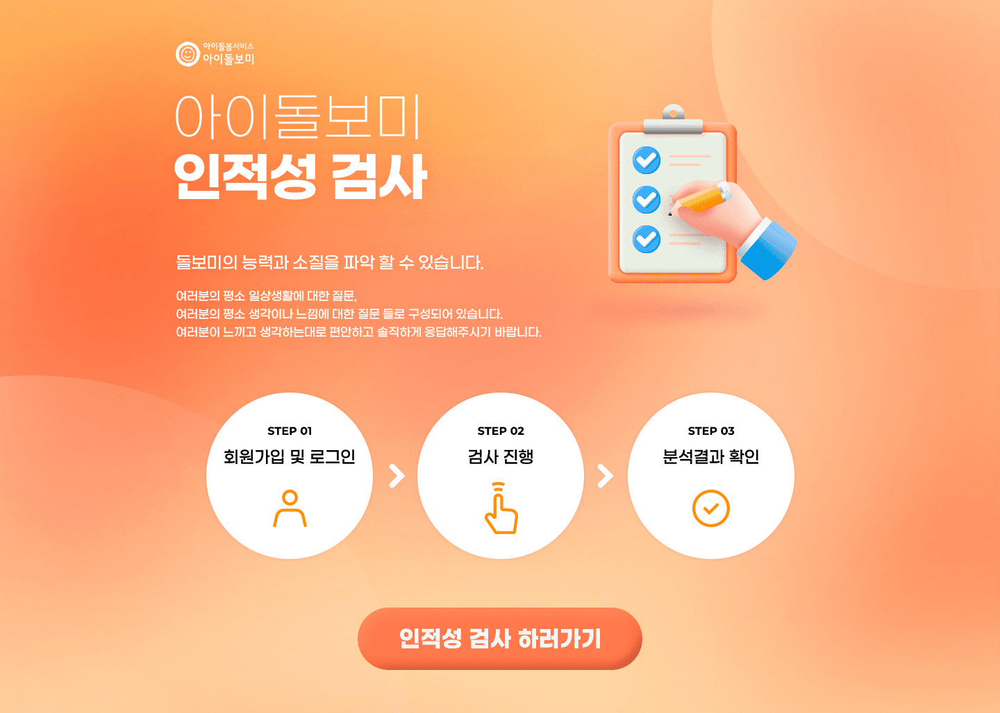

 <!-- Header -->
<%- include('./ejs/top.ejs', {
    title: "한가원 인적성",
    url: "../"
}) %>

<!-- 레이아웃 -->
<div class="lytLayout">
    <div class="layoutArea">

        <!-- 상단영역 -->
        <div class="layoutTop">
            <!-- Top -->
            <%- include('./ejs/header.ejs', {
                url: "../"
            }) %>
        </div>
        <!-- //상단영역 -->
        <div class="mainLayout">
            <!-- 메인 콘텐츠 영역 -->
            <div class="introCover">
                
                <span class="irArea hidden">
                    아이돌봄서비스-아이돌보미<br>
                    아이돌보미 인적성 검사<br>
                    돌보미의 능력과 소질을 파악 할 수 있습니다.<br>
                    여러분의 평소 일상생활에 대한 질문, 여러분의 평소 생각이나 느낌에 대한 질문 들로 구성되어 있습니다. 여러분이 느끼고 생각하는대로 편안하고 솔직하게 응답해 주시기 바랍니다.<br>
                    인적성 검사의 절차는 아래와 같습니다.
                    STEP.01 - 회원가입 및 로그인
                    STEP.02 - 검사진행
                    STEP.03 - 분석결과 확인
                </span>
                <div class="goToTest" onclick="popOpen('test01')"></div><!-- 클릭 시, 팝업 호출 (personalInfo.html) -->
            </div>
            <!-- //메인 콘텐츠 영역 -->
        </div>

        <!-- 하단영역 -->
        <div class="layoutFooter">
            <!-- Footer -->
            <%- include('./ejs/footer.ejs', {
                url: "../"
            }) %>
        </div>
        <!-- //하단영역 -->

    </div>
</div>

<!-- 검사 완료 알럿 2-2 -->
<!-- addClass - on:팝업오픈 -->
<!-- <div id="done01" class="modAlert">
    <div class="alertArea">
        <div class="alertTit">
            <span>이미 검사를 완료하였습니다.​</span>
        </div>
        <div class="alertBtm">
            <button class="btn dkBlue" onclick="closeAlert('done01');">확인</button>
        </div>
    </div>
</div> -->

<!-- Bottom -->
<%- include('./ejs/bottom.ejs', { }) %>